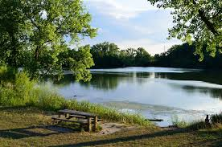

This is a gret place to fish at. You will have to hike to get the to the best spots. You should fish along the edges of the lagoons as you hike, but if you want to catch the best fish you should fish at the dam The lagoons are a combine 242 acres. The max depth being 5.5 feet
Beck Lake
| Fish | 1-5 | Notes | |
|---|---|---|---|
| Bass | 4 | Great fish to fish for. Good all season. Most likey to catch this fish | |
| Bluegill | 3.5 | Not as good as the Skokie lagoons, but still pretty good. | |
| Walleye | 3 | Good when freshly stocked. This is one April 21st. | |
| catfish | 3 | Okay around he whole seaon. | |
What you need to know
If you are to fish here. I would recommend renting a kayak so you can fish along the shore. Don't fish off of the dock instead fish by the grassy areas. Beck lake is 38 acres with the max depth being 20 feet.

Belleau Lake
| Fish | 1-5 | Notes | |
|---|---|---|---|
| Bass | 3.5 | You might catch some you might not | |
| Bluegill | 3.5 | okay at this lake not as good as others. | |
| Trout | 4.5 | Good when freshly stocked. This is in Fall and Spring. |
What you need to know
This is a okay place to go to. I would recommend going in the Fall or Spring for the trout. If you aren't going for trout then you should probally fish somewhere else. This lake is 12 acres with a maximum depth of 31.6 feet.

Glenview Lake
| Fish | 1-5 | Notes | |
|---|---|---|---|
| Bass | 2 | You will probally not catch bass here | |
| Bluegill | 3 | Okay at this lake not as good as others. | |
| Carp | 3.5 | The fish that is okay to fish for. | |
| Catfish | 1 | Very hard to catch the catfish. Don't fish for catfish | |
What you need to know
Do not fish here. You could fish here for days and still not catch anything. There is nothing special about this lake. Go somewhere elese if you find yourself fishing here. If you do fish here the only okay spot is under the bridge. It is catch and release and there are no boats allowed. The lake is 45 acres and the maximum depth is 19 feet.